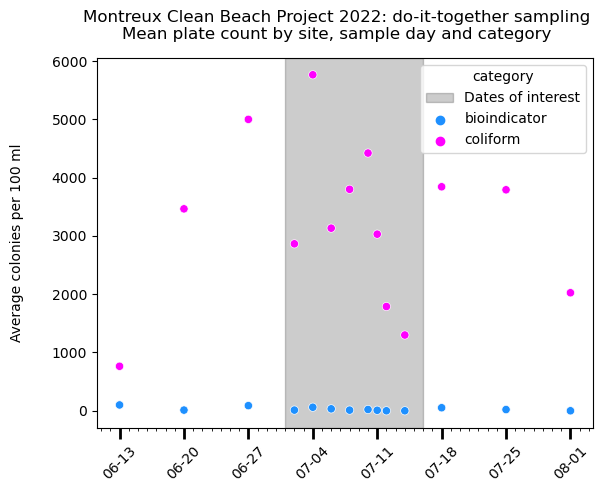
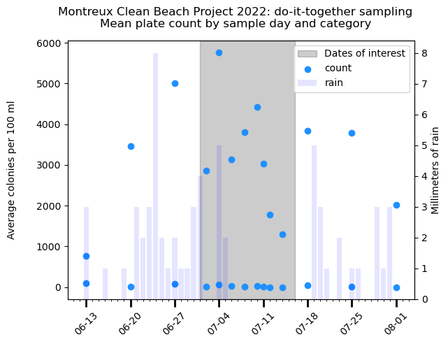
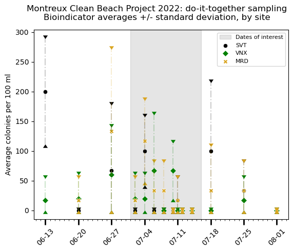
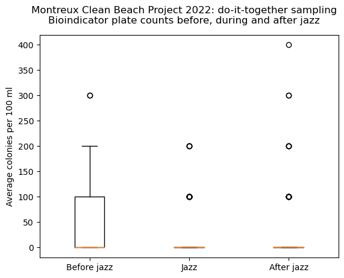
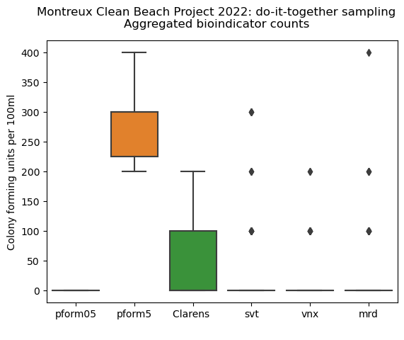

2. Sample output#
Montreux Jazz festival: Do it together water quality monitoring
number of sample days 16
number of samples 53
Total number of cards:
[('bioindicator', 826), ('coliform', 826), ('turquoise', 826)]


The weighted average and standard deviation of BIOINDICATORS at each location.
SVT : {'weighted_av': 39.19, 'std': 57.11, 'a_min': 0.0, 'a_max': 200.0, 'n_samples': 74}
VNX : {'weighted_av': 19.4, 'std': 21.32, 'a_min': 0.0, 'a_max': 66.67, 'n_samples': 67}
MRD : {'weighted_av': 34.29, 'std': 43.27, 'a_min': 0.0, 'a_max': 133.33, 'n_samples': 70}
The weighted average and standard deviation of COLIFORMS at each location.
SVT : {'weighted_av': 4162.16, 'std': 3691.18, 'a_min': 520.0, 'a_max': 15733.33, 'n_samples': 74}
VNX : {'weighted_av': 2970.15, 'std': 1170.61, 'a_min': 866.67, 'a_max': 4533.33, 'n_samples': 67}
MRD : {'weighted_av': 3614.29, 'std': 2055.43, 'a_min': 1050.0, 'a_max': 7033.33, 'n_samples': 70}
Show code cell source
# bioindicator results
title = "Bioindicator averages +/- standard deviation, by site"
soi = "bioindicator"
fig, ax = plt.subplots()
# the shaded area of the jazz
ax.axvspan(f_start, f_end, color="black", alpha=.1, label="Dates of interest")
# the results from each location
for site in sites:
data = sample_groups[site].format_df_for_display_mean_std(soi)
data= data[data["date"] <= dt.date(2022, 8, 1)]
ax = scatter_plot_with_std(**dict(data=data, label=site, x="date", y_one="std -", y_two="mean", y_three="std +", ax=ax, color=marker_colors[site], marker=site_markers[site]))
ax = major_and_minor_ticks(ax)
ax.set_ylabel("Average colonies per 100 ml")
ax.set_xlabel("")
handles, labels = ax.get_legend_handles_labels()
h = [handles[0], handles[1], handles[4], handles[7]]
ls = ["Dates of interest", "SVT", "VNX", "MRD"]
ax.get_legend().remove()
plt.suptitle(f"Montreux Clean Beach Project 2022: do-it-together sampling\n{title}", fontsize=12)
plt.legend(h, ls, loc="upper right", fontsize=8)
plt.show()

2.1. 1. Are the plate counts for bioindicators durring the festival different than the counts before and after the festival?#
2.1.1. H0: E[count]jazz dates = E[count]other dates#
2.1.2. H1: E[count]jazz dates \(\neq\) E[count]other dates#
If the expected value of the plate counts during the festival are within the 95% confidence interval of the plate counts before and after the festival then we assume that there was no difference between the three time periods.
The weighted average, standard deviaton, min, max and number of samples by period:
Before the jazz:
{'weighted_av': 75.0, 'std': 84.29, 'a_min': 16.67, 'a_max': 200.0, 'n_samples': 16}
During the jazz:
{'weighted_av': 25.0, 'std': 35.94, 'a_min': 0.0, 'a_max': 116.67, 'n_samples': 96}
After the jazz:
{'weighted_av': 30.3, 'std': 38.33, 'a_min': 0.0, 'a_max': 133.33, 'n_samples': 99}

